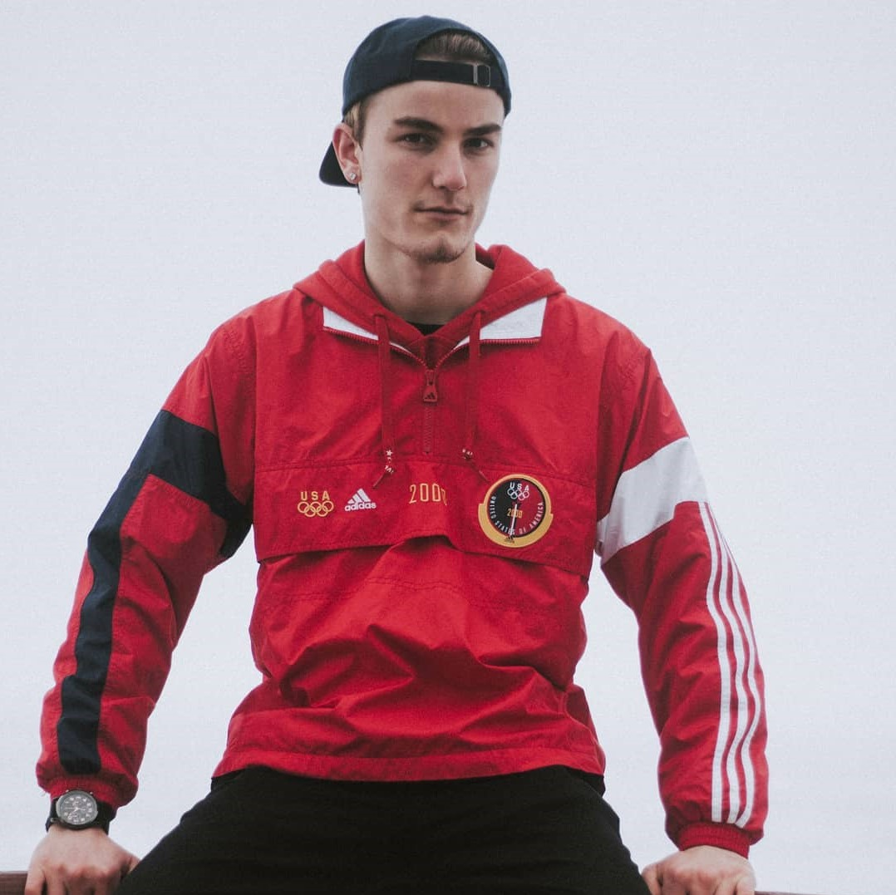
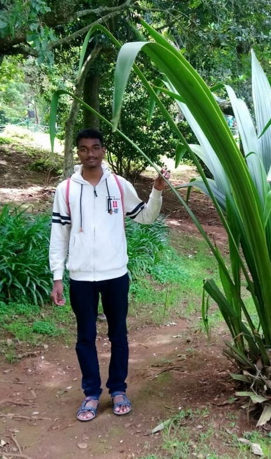

Scott Olthoff

I am Scott Olthoff and I am team member number 1. I am taking Interactive Media Design so I can take the Visual Effects and Editing for Contemporary Media program and hopefully get into the special effects and video editing industry. I was taking the Computer Programming course but dropped out of that because I was not happy. I took a year off and worked full-time at Value Village and now I am here in this program. So far I have been enjoying it.
In my spare time, I enjoy watching videos, TV shows, and movies, playing video games, playing hockey, and thrift shopping. Some of my favourite TV shows include the Marvel Netflix series, It's Always Sunny In Philadelphia, and Archer. My top 3 favourite movies (in no particular order) are Fight Club, 8 Mile, and Shutter Island.
I also run a small business on Instagram called Thrifty Bizness where I sell vintage and thrifted items. I started it up in January when I decided that if I am going to be thrift shopping anyways, I might as well make a profit doing it. I also knew a few people who do the same thing who have helped me since I started up. I recently expanded my brand and started posting some of my things up for sale on a website called Grailed, where people sell clothing.
Some of the brands I sell:
- Nike
- Adidas
- Tommy Hilfiger
- Starter
- Champion
- Ralph Lauren
Rohit Victor
I am Rohit Victor, team member number 2. I'm taking the Interactive Media Design Course too, to get better at design in general, and to learn about coding. I hope to become a web designer and developer, or a freelancer specializing in both. I'm generally bad at design but am interested in it, and maybe I'll get better at it, enough to make a career out of it.
My sole hobby is playing games on my laptop, and I used to play cricket and football when I was in school, back in India. I watch movies and TV shows sometimes, with my family. I enjoy watching horror movies, though they don't really scare me. I am a huge fan of Dragon Ball Z.
I prefer to be, and usually am, on my own. I'm a listener, and rarely talk, unless its a subject I'm passionate about. I spend a lot of time on my phone and PC, playing games or browsing.